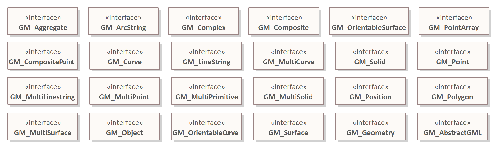
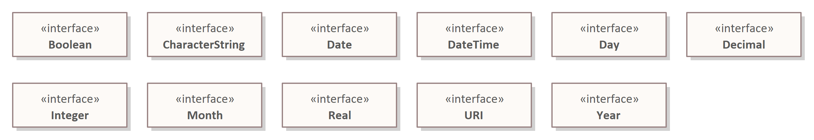
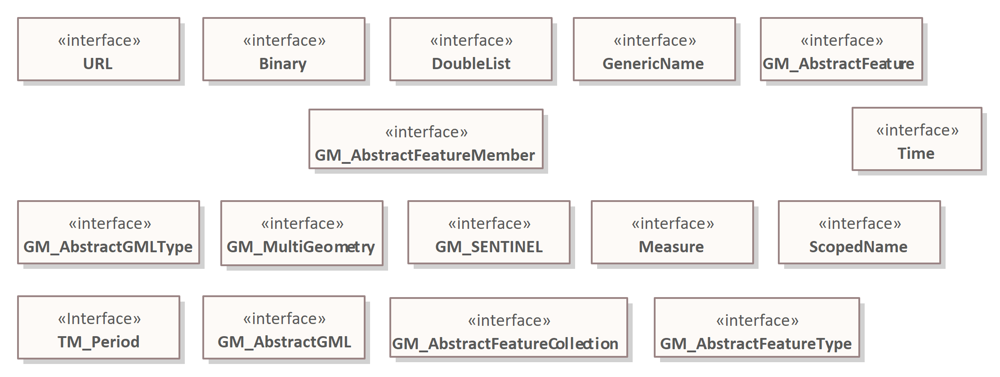

EA - Gebruik standaarddatatypes (intern)
Bij Geonovum gebruiken we een aantal voorgedefineerde datatypes. Deze zijn opgedeeld in drie categorieën:
- MIM11 -- Dit package bevat de datatypes die voorgedefinieerd zijn in het MIM
- Geonovum geometrie -- Dit package bevat de geometrietypes uit ISO19107. Deze zijn in een los package gestopt zodat andere partijen die alleen geometrie willen gebruik deze types kunnen gebruiken,
- Geonovum algemeen -- In dit package zitten alle overige datatypes die in Geonovum UML packages gebruikt worden. Merk op dat in dit package ook wat geometrie types zitten; dit zijn types die niet uit ISO-19107 komen. Bij voorkeur worden deze niet in de modellering gebruikt.
In: svn.geostandaarden.nl/Datatypes zijn drie collecties met primitieve types opgenomen die alle primitieve types bevat die in Geonovum UML modellen gebruikt
Deze packages zijn in beheer bij @wilkoquak. Het is de bedoeling dat er in [Imvertor] een mapping komt die precies overeenkomt het deze drie collecties types
Geometrie datatypes
In dit package zitten de geometrische datatypes zoals genoemd in ISO19107:2003.

MIM datatypes
In dit package zitten de geometrische datatypes zoals genoemd in MIM.

Geonovum datatypes
In dit package zitten datatypes die niet in de twee eerdergenoemde packages vallen maar wel ergens gebruikt zijn bij Geonovum.

Alle basic datatypes binnen UML zouden in één van deze packages moeten staan.
Als dat niet zo is neem dan contact op met @Wilko.
Je vindt ze op SVN: svn://svn.geostandaarden.nl/Datatypes:
Warning Onderstaande naamgeving klopt niet meer. Dit is door Wilko in overleg aangepast.
@Gerard: graag updaten!
MIM11.xmlGeonovum-algemeen.xmlGeonovum-geometrie.xml
Note Er is nu nog een
Datatyps.xmlwaarin alle datatypes zitten deze gaat binnenkort verdwijnen.
Datatypes importeren voor gebruik in EA
Lees hoe je deze types als packages importeert in de handleiding SVN - importeren bestaand project.
Gebruik packages in EA
Deze packages zijn bedoeld voor toepassing binnen een informatiemodel. Het is niet de bedoeling om de packages in of uit te checken; er hoeven immers geen wijzigingen in aangebracht te worden.
Note >
@Wilkoen@Paul: Eigenlijk zou je hier een beperkt aantal mensen schrijfrechten willen geven en de rest alleen lees-rechten. Ik heb zoiets nog niet kunnen vinden.@Gerart: je kunt dat instellen door in configuratiebestandjes op svn.geostandaarden.nl, maar dan moet je daar wel bij kunnen.
Verwijzen naar een datatype
Note >
@Gerard: In deze paragraaf een uitleg opnemen hoe je vanuit Enterprise Architect een voorgedefineerd datatype opneemt bij een«Attribuutsoort». |